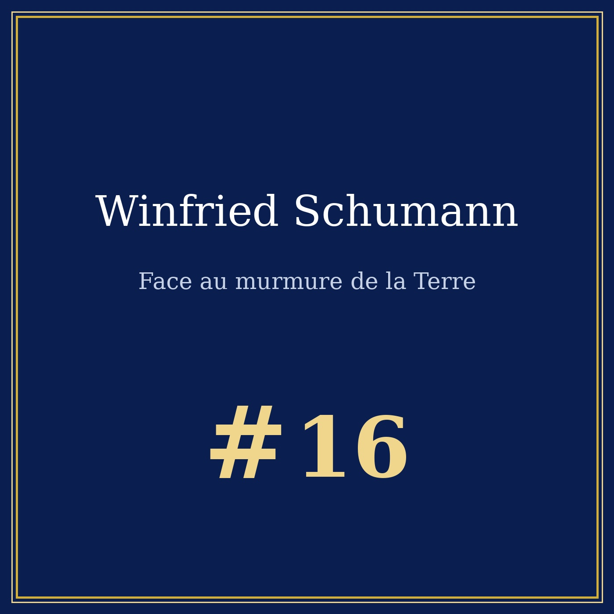
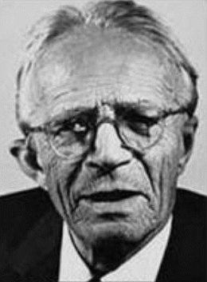

Portrait n°16 — l'homme qui a calculé la fréquence de la Terre
Œuvre de fiction radiophonique et biographique à caractère historique et patrimonial. Les faits présentés dans cet article sont réels et sourcés ; l'entretien est une reconstitution imaginée.


🎧 Écoutez le portrait : Winfried Schumann face au murmure de la Terre, 13 min 31 — Écouter sur Spotify →
Musique de l'épisode : « Träumerei » (Kinderszenen, op. 15 n° 7) de Robert Schumann — interprétation d'Edigarmonteiro, CC BY-SA 3.0, Wikimedia Commons.
Winfried Otto Schumann naît le 20 mai 1888 à Tübingen, en Allemagne, et meurt le 22 septembre 1974 à Munich, à quatre-vingt-six ans. Fils d'un chimiste physique, il grandit à Cassel puis à Berndorf, près de Vienne, et étudie l'ingénierie électrique à l'institut de Karlsruhe, où il obtient son doctorat en 1912. Physicien et ingénieur électricien, il passe sa vie à chercher une chose simple : une fréquence que personne n'avait jamais réussi à mesurer.
Entre la surface du globe et l'ionosphère — la couche conductrice de l'atmosphère, située vers soixante-dix ou quatre-vingts kilomètres d'altitude — il existe une cavité électromagnétique. Deux surfaces conductrices qui se font face : un guide d'onde fermé, exactement comme le tube d'un orgue.
Le mode fondamental de cette cavité est l'onde dont la longueur d'onde vaut la circonférence de la Terre. Division par la vitesse de la lumière, et l'on obtient 7,83 hertz : le mode le plus bas, suivi des harmoniques 14,1 / 20,3 / 26,3 / 32,5 Hz, espacées d'environ 6,5 hertz. Ce n'est pas un chiffre mystique, c'est une division.
En 1893, le physicien irlandais George Francis FitzGerald remarquait déjà que les hautes couches de l'atmosphère devaient être de bons conducteurs, et estimait une période de dix centièmes de seconde. En 1902, Heaviside et Kennelly proposent l'existence d'une ionosphère ; en 1925, Appleton et Barnett la démontrent expérimentalement. Winfried Schumann, en 1952, pousse l'idée jusqu'au bout : non plus la conductivité d'une couche, mais la résonance d'une sphère. Il publie ses calculs avec son étudiant H. L. König.
Ce qui fait vibrer la cavité, c'est la foudre. En permanence, environ 2 000 orages sont actifs sur le globe, pour environ 50 éclairs par seconde. Un canal de foudre est une antenne démesurée : le fond permanent mesuré au sol est la signature de tous les orages du monde, additionnés. La Terre ne joue pas de la musique : elle réagit à la foudre comme un tambour sur lequel on frappe partout en même temps.
Le signal utile est noyé dans le bruit du monde : moteurs, magnétosphère, machines. Il a fallu des années de mesures et de patience analytique. König obtient la première indication expérimentale en 1958 puis 1961 ; de 1960 à 1963, Balser et Wagner vainquent enfin le problème de l'analyse : le signal est extrait du bruit. Aujourd'hui, des stations de mesure fonctionnent sur tous les continents.
Le champ électrique de la résonance fondamentale est de l'ordre de 300 microvolts par mètre, quand le champ statique de beau temps atteint 150 volts par mètre : environ 500 000 fois plus faible. Le champ magnétique, lui, est de l'ordre du picotesla, contre 30 à 50 microteslas pour le champ terrestre. Si la Terre fredonne, c'est à la voix d'une mouche — un silence que l'on mesure.
Mais ce silence est un instrument formidable. Les résonances permettent de compter les orages et de suivre leur géographie, de mesurer la température des airs tropicaux (E. R. Williams, 1993) ou la vapeur d'eau de la haute troposphère, d'étudier la basse ionosphère, et même — en exploration géophysique — de localiser des gisements d'hydrocarbures au large des côtes.
On raconte qu'un jour quelqu'un aurait éteint le chant de la Terre. L'origine de cette légende est un programme de recherche ionosphérique installé en Alaska par les États-Unis dans les années quatre-vingt, HAARP, qui a nourri toutes les théories de complot. Non : ces résonances n'ont jamais été éteintes, elles ont été mesurées pendant des décennies, partout, avec des instruments de plus en plus précis. Ce que l'on éteindrait, ce serait la possibilité de vérifier.
Puis Internet est arrivé, avec son industrie du bien-être : générateurs à 7,83 hertz, promesses de guérison, ADN qui se répare. La science, elle, a posé la question sans y répondre : une revue de 2025 sur les résonances de Schumann et le corps humain parle d'un problème ouvert, de questions d'interaction, de perspectives. Une question ouverte n'est pas une preuve. Les résonances de Schumann sont un instrument, pas un médicament.
Après Tomatis, le médecin de l'oreille, Pythagore et la musique des sphères, le duel des diapasons 432 vs 440 et Beethoven face au silence, la série touche enfin la Terre elle-même : une fréquence qui ne vient pas d'un instrument, mais du globe, et que l'on peut mesurer sans l'entendre.